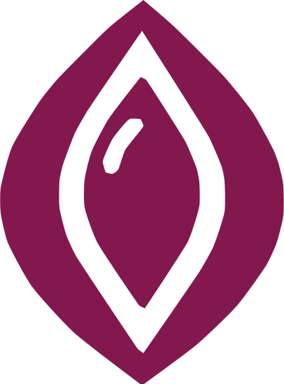

“Je hoeft niet alles alleen te dragen. Soms begint een nieuwe stap bij iemand die echt luistert.”
De praktijk
Een rustige plek, dicht bij de natuur.
In een rustige omgeving nemen we tijd om te luisteren en te verkennen wat je nodig hebt. In de praktijk of online, afhankelijk van je vraag.
- In de praktijkWagenstraat 6, 3740 Bilzen-Hoeselt
- OnlineWaar het past bij jouw vraag
- Op afspraakFlexibel in te plannen, uitsluitend op afspraak
Hoe het werkt
Een eerste gesprek, op jouw tempo.
-
1
Je vraagt een intake aan
Via het contactformulier of per e-mail. Je hoeft nog niet alles helder te hebben.
-
2
Je krijgt een persoonlijk antwoord
Doorgaans binnen 48 uur op werkdagen. De afspraak is definitief na bevestiging.
-
3
We luisteren naar jouw verhaal
Een intakegesprek duurt 60 minuten en kost € 75. Samen bekijken we welke ondersteuning passend is.
In ontwikkeling
Een boek over ouderschap.
Binnenkort deel ik hier meer over het verhaal en de inspiratie achter dit project.